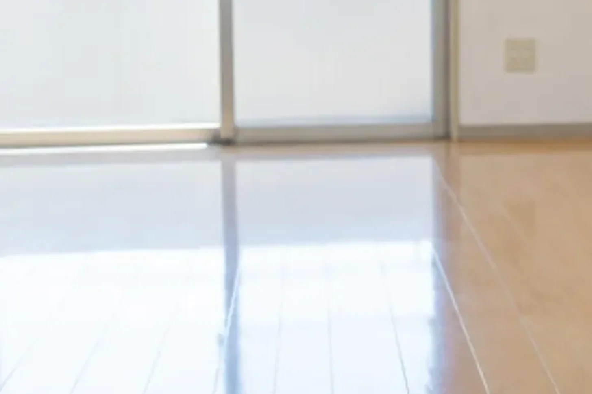

CLEAN CARE JOURNAL / 介護・福祉施設 #01
退去後の居室、
最初に見るべき 3 か所。
鍵を受け取って、部屋に入る。たいていの人は、まず全体を見渡します。けれど清掃の順番を決めるために最初に見るのは、部屋の「真ん中」ではなく、三つの「端」です。

01 / FIRST PHOTO一枚目の写真は、何も触る前に。
退去後の居室の清掃は、掃除から始まりません。記録から始まります。扉を開けて、荷物を置く前に、入口から一枚。これは証拠のためというより、「終わったあとに、何が変わったかを自分で見るため」の一枚です。
介護施設の居室は、一般の賃貸と少し違います。ベッドの位置、手すり、ナースコールの線、車いすの通り道。次に入る方の生活がすでに想像できる部屋です。だから「きれいにする」だけでなく、「次の方が使いやすい状態に戻す」ことまでが仕事になります。その基準点を、一枚目の写真で決めます。
02 / THREE EDGES三つの端。
- 床と壁の境目(巾木のライン)
ベッドの脚があった場所、車いすのタイヤが当たっていた高さ。汚れと傷はここに集まります。部屋の真ん中の床はきれいでも、巾木に沿って黒い線が残っていれば、清掃のあとも「古い部屋」に見えます。
- 窓際(サッシの溝と、カーテンレールの上)
日が当たる場所は、ほこりが焼きついて色が変わります。溝の砂、レールの上の綿ぼこり。ここは掃除機では取れず、拭く順番を間違えると床に落ちて二度手間になります。だから最初に見て、上から下への順番を決めます。
- 水まわりの足元(洗面台の下、トイレの便器の根元)
居室に洗面やトイレがある場合、臭いの元はここです。見えない場所ほど、前に使っていた方の時間が残っています。ここを最初に見ておくと、使う薬剤と換気の時間が決まります。
三つとも、部屋の「端」です。人の目は真ん中を見ますが、汚れは端に溜まる。清掃の順番は、端を見てから決めます。
03 / ONE MORNINGある施設の、ある午前。
これは説明のための場面です。
朝 9 時半、入居者の皆さんが食堂へ移動したあとの時間に、空いた居室に入ります。昼食の 12 時までに、音の出る作業を終える約束です。
一枚目の写真を撮って、三つの端を見ます。巾木の線は薄い。サッシの溝に砂。洗面台の下に、わずかに臭い。これで順番が決まります。先に窓際を上から下へ。次に洗面台の下を薬剤で、換気をしながら。最後に床を、巾木に沿って。掃除機の音は、食堂のレクリエーションが始まる 10 時半に重ならないよう、最初の 30 分で済ませます。
11 時 40 分、終わりの写真を一枚目と同じ位置から撮ります。職員の方に「終わりました。洗面台の下の臭いは取れましたが、排水の奥に残るようなら、別の作業になります」と伝えて、鍵を返します。食堂から戻ってくる方と廊下ですれ違うとき、道具は壁側に寄せます。
04 / WHYなぜ、端から見るのか。
理由は二つあります。一つは順番。清掃は「上から下へ、奥から手前へ」が基本で、端を見れば、どこが上でどこが奥かが分かります。もう一つは、報告のためです。「きれいになりました」は報告になりません。「巾木の線は落ちました。サッシの溝の砂は取りました。洗面台の下の臭いは、今日は取れましたが、排水の点検をおすすめします」——端を見ておくと、終わったあとに、こういう言い方ができます。
掃除は、場所を整えることで、そこにいる人の一日を整えることです。禅寺では掃除を「作務」と呼び、修行の一部として大切にしてきました。宗派や信仰の話ではなく、道具を元の場所へ戻し、音を立てず、終わったら人に報告する——その作法が、介護の現場にそのまま合います。
持ち帰り
- 最初の一枚は、触る前に。終わったあとに自分で比べるための基準点。
- 端を三つ見る。巾木のライン、窓際、水まわりの足元。順番と薬剤と換気が決まる。
- 報告は、場所の名前で。「きれいになった」ではなく、「どこが、どうなったか」。残るものは残ると言う。
場面の描写は説明のための例で、特定の施設・案件・実績を表すものではありません。作業の内容と順番は、施設の状況により変わります。